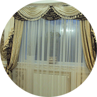
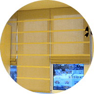
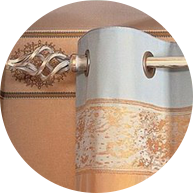
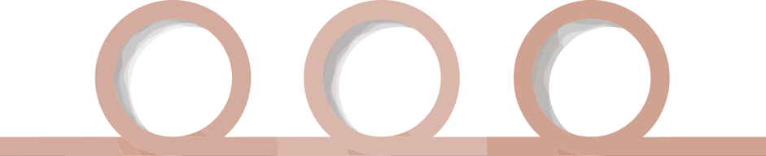
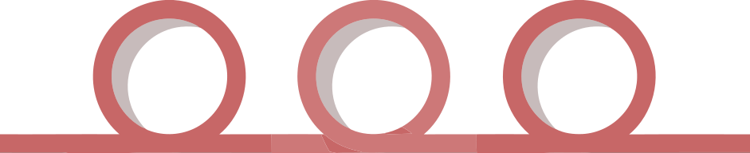

Княжi
Гардини
Гардини
УКР
РУС
Наши услуги

Пошив
Ламбрекенiв
Ламбрекенiв
Создают ощущение легкости и элегантности. Можно отделать кромки на ваш вкус. А так же добавить орнамент.
И выбрать вам понравившуюся ткань.
И выбрать вам понравившуюся ткань.

Пошив
штор i тюля
штор i тюля
Вы получите то, что искали! Богатый выбор тканей и материалов позволит осуществить любую вашу задумку.

Римские и рулонные
шторы
шторы
Уникальность Римских штор делает возможным осуществление любых дизайнерских планов. Её можно закрепить на стене, поместить в нишу, любой оконный проём.

Шторы
на люверсах
на люверсах
Максимальная простота и функциональность. все больше людей отдают предпочтение простым, но не менее оригинальным шторам люверсам.
Приносить уют и комфорт в Ваш дом –
вот к чему мы стремимся!
вот к чему мы стремимся!
Соединив хорошее обслуживание, качественную продукцию и самые дешевые на рынке цены, нам удалось добиться уважения и любви наших клиентов. Ведь главное в нашем деле – ответственность.
Поэтому наша команда – это профессионалы своего дела, которые любят свою работу.
Среди многообразия наших моделей и цветов, вы обязательно найдете уникальный и идеально подходящий вариант! А наши мастера воплотят ваши самые заветные мечты.
Мы гарантируем отличное качество продукции, а также предоставить максимально низкие цены. Огромное количество благодарных отзывов от клиентов. Шторы изготавливаются из высококачественных турецких материалов. А с полным ассортиментом продукции вы можете познакомиться у нас в магазине. Лично все пощупать, посмотреть, посоветоваться с профессионалами и воплотить свою мечту.
Поэтому наша команда – это профессионалы своего дела, которые любят свою работу.
Среди многообразия наших моделей и цветов, вы обязательно найдете уникальный и идеально подходящий вариант! А наши мастера воплотят ваши самые заветные мечты.
Мы гарантируем отличное качество продукции, а также предоставить максимально низкие цены. Огромное количество благодарных отзывов от клиентов. Шторы изготавливаются из высококачественных турецких материалов. А с полным ассортиментом продукции вы можете познакомиться у нас в магазине. Лично все пощупать, посмотреть, посоветоваться с профессионалами и воплотить свою мечту.
Наши преимущества
Качественные
материалы
материалы
Индивидуальный
подход
подход
Доступные
цены
цены
Работа
под ключ
под ключ
Гарантия
Соблюдение
сроков
сроков
Мы предоставляем услуги:

